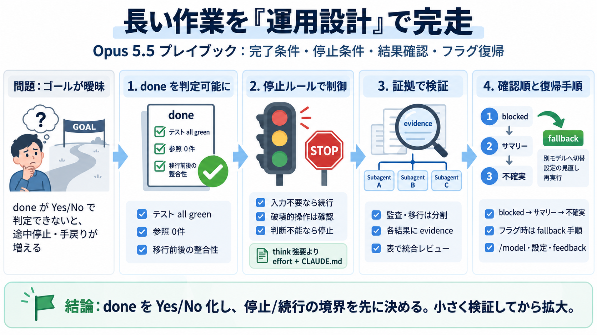

Anthropic Releases Claude Opus 5.5 With Lower Pricing and New Safeguards – Unite.AI
Anthropic released Claude Opus 5.5 on September 22, 2026, the first model in its new Claude 5.5 family. The model is pri…

Claude apps と Claude Code で、完了条件・停止条件・結果確認・フラグ復帰までを型化するガイドです。（長時間コード変更／移行／監査／ドキュメント精査向け）
長いタスクは、done（完了条件）が曖昧だと終了ラインがずれます。するとモデルの走り方がぶれて、手戻りが増えます。
完了条件を具体化して、テスト結果や件数などで Yes/No 判断できる形にします。Opus 5.5 はゴールが見えるほど最後まで走りやすくなります。
「think carefully」のような思考強要文言は、品質向上より遅延を招く可能性があります。代わりに effort や CLAUDE.md の停止条件で運用を制御します。
長い実行は「報告だけして止まる」ことがあります。入力不要なら続行し、破壊的操作の前やユーザーなしで進めないときだけ確認する、が基本です。
監査・移行のような大規模作業は、サブエージェントで分割し、各結果の証拠を確認してから統合します。見落としや誤検出を減らせます。
結果確認は、まず blocked on me 等の「ユーザー承認が必要な点」を読むのが効率的です。次に変更内容、最後に不確実点をチェックします。
Claude apps では図・スクリーンショット・チャートを文章に打ち直さず添付すると精度が上がります。Claude Code では TASKS.md のようにタスクリストを保持して状況把握を効率化します。
bio/cyber safeguards でメッセージがフラグされると、別モデルへ切り替わる場合があります。切替後にどこを見て、どう戻すかを事前に決めます。
完了条件（done）を判定可能にし、無駄な思考指示を削って停止ルールで制御し、blocked を最優先で確認する—これが成功確率を上げます。
Anthropic released Claude Opus 5.5 on September 22, 2026, the first model in its new Claude 5.5 family. The model is pri…
| Model or Product | Release Date | Key Highlight | ---: | Claude Opus 5.5 | September 22, 2026 | Anthropic's most cap…
The release arrives just under two months after Opus 5, and it comes with a renewed focus on safety and alignment. Anthr…
Anthropic ran alignments tests that show Opus 5.5 is the strongest performing model to date. Noteworthy are improvements…
The new model uses the same biology safeguards as Fable 5.1, but the company said that organizations like pharma compani…